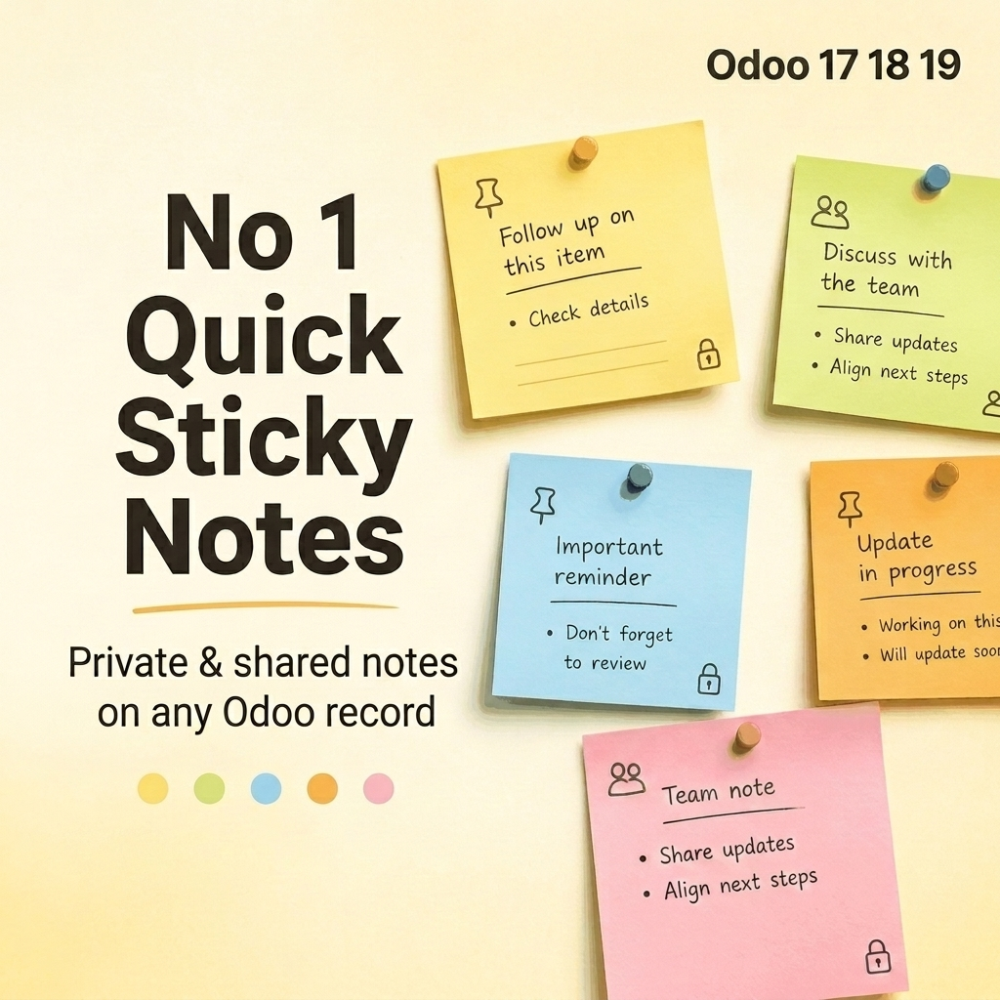
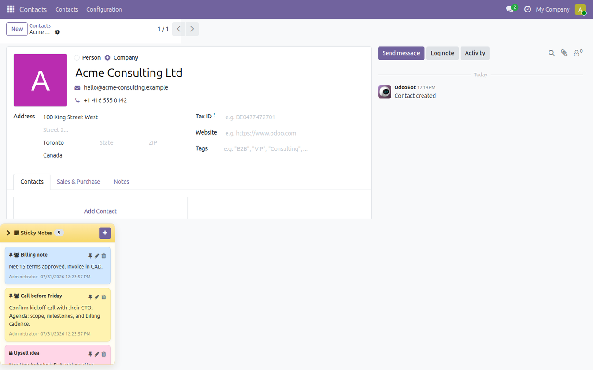
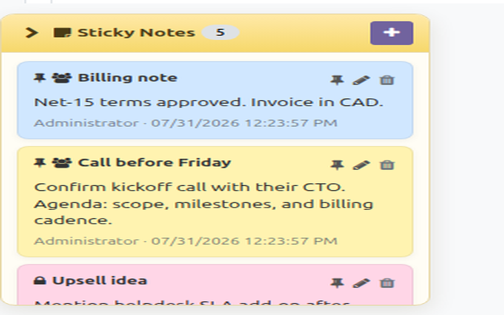
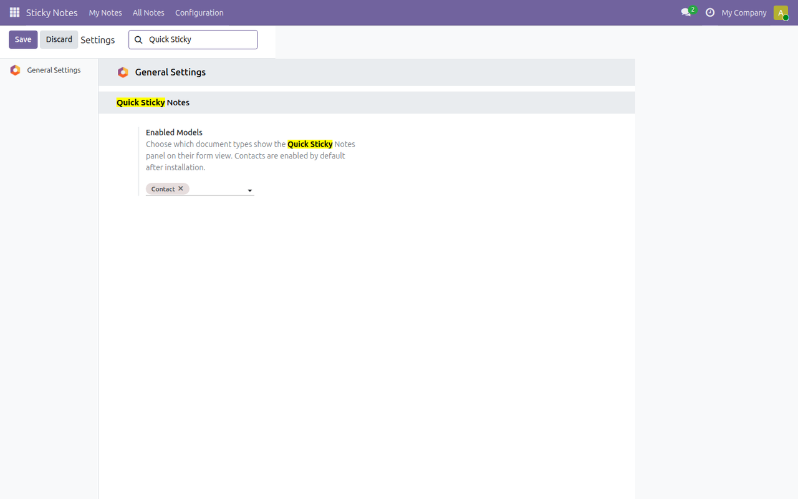
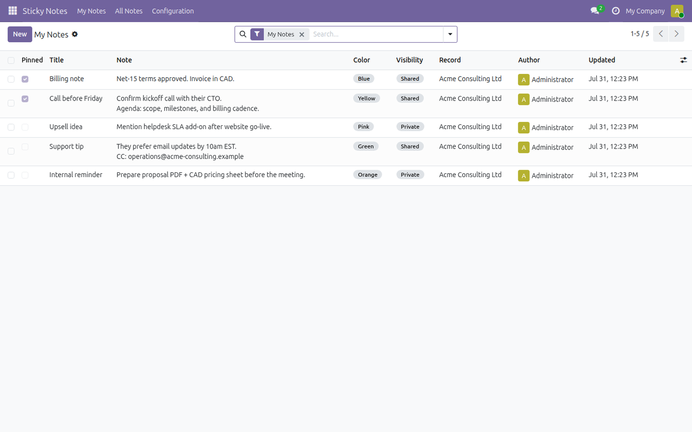

Free · Odoo 19 · LGPL-3
Keep important reminders visible on any Odoo record form. Colorful sticky notes that stay private or shared — without cluttering Chatter.
Open an enabled record and the sticky panel appears beside the form. Add multiple notes, pin the important ones, and keep personal follow-ups private.

Live screenshot — Contact form with pinned, shared, and private sticky notes
Notes stay visible while you work the form — perfect for call-backs, billing terms, and internal tips.
Keep personal reminders locked to you, or share notes with colleagues who can open the same document.
Use Yellow, Green, Blue, Orange, and Pink colors, and pin critical notes to the top.
Each note shows author, last update, visibility, and pin status. Only the author can edit or delete their note.

Live screenshot — sticky panel detail with colors, pins, and private/shared icons
Choose exactly which models show the panel. Contacts are enabled after install — add Sales, CRM, Projects, or any other model anytime.

Live screenshot — enabled models configuration

Live screenshot — My Notes overview with filters and colors
Review everything in one place, then jump back to the related record in one click.
Tip: create notes from the record panel. The My Notes menu is for reviewing existing notes.
✓ OWL sticky notes panel on enabled record forms (Odoo 19)
✓ Multiple notes per record with title + body
✓ Five colors: yellow, green, blue, orange, pink
✓ Pin / unpin important notes
✓ Private vs shared visibility with record rules
✓ Author and last-updated tracking
✓ Collapsible panel to save screen space
✓ My Notes / All Notes menus + Open Record action
✓ Settings to enable/disable models
✓ Automated tests included
Designed clean for production and the Odoo Apps Store.
quick.sticky.note, quick.sticky.note.modelweb.FormViewThis app is published free for the Odoo community. Need help or have a feature request? Contact the author from the Apps Store page.
Quick Sticky Notes · Free productivity app for Odoo 19 · LGPL-3